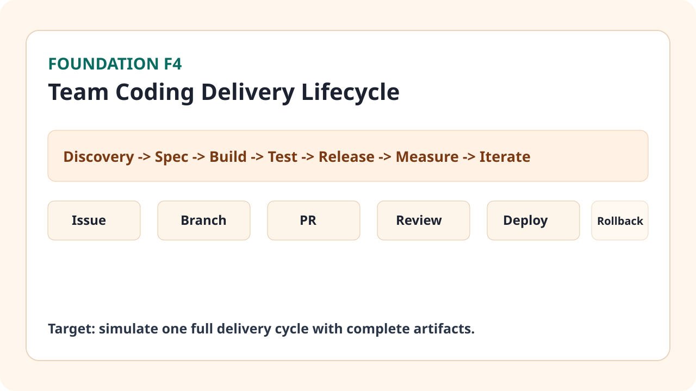

Business Situation

Concepts You Need
- Lifecycle: Discovery -> Spec -> Build -> Test -> Release -> Measure -> Iterate.
- Issue: một yêu cầu có mục tiêu, scope, acceptance criteria rõ ràng.
- PR Review: cổng kiểm soát chất lượng trước khi deploy.
- Rollback: cơ chế quay về bản ổn định nếu release gây lỗi.
How Team Does This in Real Life
- Marketer đóng góp discovery bằng dữ liệu funnel và pain point người dùng.
- Spec được viết thành user story + acceptance criteria có KPI rõ.
- Dev triển khai theo issue/branch, reviewer kiểm chuẩn coding + business logic.
- Sau release, team đối chiếu KPI để quyết định iterate hoặc rollback.
Step-by-Step Workflow
- Viết 1 issue mẫu cho yêu cầu marketing automation.
- Định nghĩa acceptance criteria đo được (speed, quality, KPI outcome).
- Mô phỏng branch/PR và review checklist.
- Lập release checklist gồm smoke test trước khi lên production.
- Định nghĩa rollback trigger (ví dụ KPI tụt >15% trong 24h).
- Viết post-release note với quyết định tiếp theo.
Mini Case + Numbers
| Case | Thiếu workflow | Có workflow chuẩn |
|---|---|---|
| Phát hành flow nurture mới | 2 lỗi production/tuần | 0-1 lỗi/tuần |
| Thời gian từ request đến release | 8 ngày | 4.5 ngày |
| Khả năng truy vết lỗi | rời rạc, mất 2h | có log, mất 25 phút |
Kết luận: workflow delivery rõ giúp team giảm lỗi và giảm lead time triển khai sản phẩm marketing.
Hands-on Task (45-90 phút)
- Viết 1 issue hoàn chỉnh cho tính năng marketing bạn đang cần.
- Tạo Mini Delivery Playbook gồm RACI, DoD, release checklist.
- Mô phỏng 1 vòng review: identify 3 risk trước deploy.
Artifact to Submit
- Issue mẫu có acceptance criteria.
- Mini Delivery Playbook (RACI + DoD + checklist).
- Release + rollback note cho case mô phỏng.
KPI / Completion Rubric
| Mức | Tiêu chí |
|---|---|
| Mức 0 | Issue chưa có KPI và acceptance criteria rõ. |
| Mức 1 | Có issue nhưng thiếu release/rollback checklist. |
| Mức 2 | Playbook đầy đủ và mô phỏng được vòng delivery. |
| Mức 3 | Nêu được rủi ro chính và kế hoạch kiểm soát sau release. |
Common Failure Patterns
- Spec mơ hồ khiến dev build khác kỳ vọng business.
- Bỏ qua review checklist nên lỗi business logic lọt production.
- Không có rollback trigger rõ nên phản ứng chậm khi KPI xấu đi.
Prompt Pack
Build prompt: "Từ bối cảnh này, hãy viết issue format chuẩn gồm problem, scope, KPI, acceptance criteria".
Debug prompt: "Sau release KPI tụt 18% trong 24h. Hãy đưa rollback checklist và các bước xác minh hậu rollback".
Review prompt: "Review playbook này theo tiêu chí rõ owner, rõ gate, rõ escalations".
Tooling Notes (IDE/CLI/tool pros-cons)
- Issue tracker (GitHub/Jira): tập trung context, nhưng cần discipline cập nhật trạng thái.
- PR review: giảm lỗi trước release, nhưng nếu checklist dài quá sẽ chậm nhịp.
- Deploy logs: giúp truy vết tốt, nhưng cần chuẩn naming để dễ tìm.
Optional Upgrade (low-code path)
- Thêm CI check đơn giản cho lint/test script trước merge.
- Tạo template issue và PR để team dùng thống nhất.
Đánh dấu tiến độ
Module này chưa hoàn thành
Đã hoàn thành Foundation 4